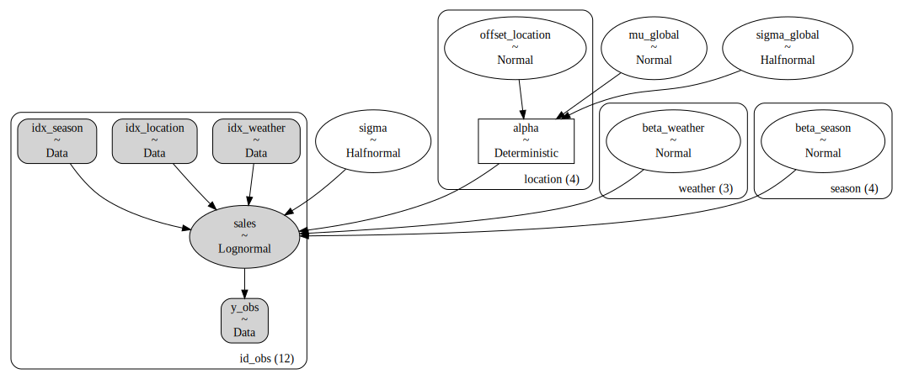
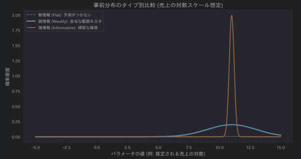
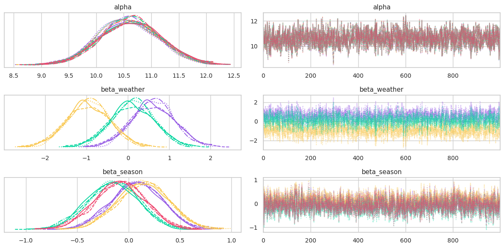
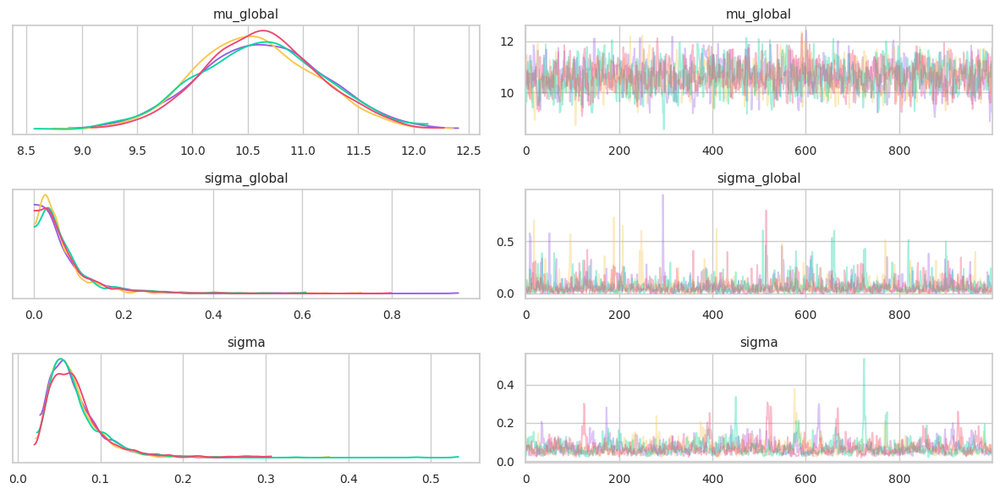
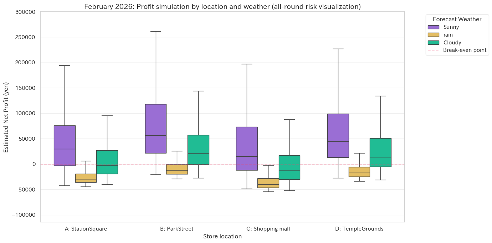

# 必要なライブラリの読み込み
import os
import numpy as np
import pandas as pd
import pymc as pm
import arviz as az
import seaborn as sns
import matplotlib.pyplot as plt
# 不要な出力をしないように制御
import warnings
warnings.filterwarnings("ignore")階層ベイズ線形回帰によるマルシェ出店地点別の売上予測
エグゼクティブサマリー
過去12件の出店データに基づき、階層ベイズモデルを用いて地点ごとの - 売上ポテンシャル - 天候リスク
を分離・評価しました。単純な平均値では判断できない「不確実性（リスク）」を可視化 し、ROI（投資対効果）に基づいた戦略的な判断材料を提供します。
事前準備
確率モデルの構築やデータ分析に必要なライブラリのインポートや独自カラー定義を行います。
# プロジェクト共通のカラー定義
COLOR_PURPLE = "#985DE5" # 事後分布・HDI
COLOR_YELLOW = "#F9C74F" # ROPE 領域
COLOR_GREEN = "#06D6A0" # 改善判定
COLOR_RED = "#EF476F" # 悪化判定
COLOR_GRAY = "#8D99AE" # 等価判定・参照線
plt.rcdefaults() # plt の現在のカラー定義をリセット
palette_brand = [COLOR_PURPLE, COLOR_YELLOW, COLOR_GREEN, COLOR_RED, COLOR_GRAY]
sns.set_theme(style="whitegrid", palette=palette_brand)
plt.rcParams["axes.prop_cycle"] = plt.cycler(color=palette_brand)
print(f"Brand Style Applied: The visual identity was applied.")Brand Style Applied: The visual identity was applied.Tips:
分析結果のビジュアルを統一し、どのグラフを見ても「紫は実力、緑は成功」と直感的に理解できるようにしています。 Color Cycle グラフを描画する際、色が指定されていない場合に自動的に適用される色の順番です。 最初は紫、次を黄色…と決めておくことで、毎回指定しなくても色が揃います。
ビジネスレポートにおいて「色の意味」を固定することは、意思決定のスピードを高めます。 複数の Notebook を管理する実務現場では、これを共通モジュール化し、メンテナンス姓を高めることを推奨します。
１番大事なことですが、自分のお気に入りの配色にするとバイブスが上がります。
データの準備とホワイトボックス化
分析の原材料となるデータの読み込み、集計可能な数値型へ変換します。 今回は、１年分の簡単なデータが CSV で記録してあった、とします。
# データの読み込み（外部データより読み込み）
PATH_ROW_DATA = "sales_performance.csv"
df_raw = pd.read_csv(PATH_ROW_DATA)
df_raw| Opening_DateTime | Location | Weather | Sales(sales_obs) | Fixed_Costs | Commission_Rate | |
|---|---|---|---|---|---|---|
| 0 | 2025-04-12 08:00-17:00 | A: StationSquare | Sunny | 73,900 | 45,000 | 0.10 |
| 1 | 2025-06-20 08:00-17:00 | A: StationSquare | rain | 17,100 | 45,000 | 0.10 |
| 2 | 2025-12-15 08:00-17:00 | A: StationSquare | Cloudy | 38,500 | 45,000 | 0.10 |
| 3 | 2025-05-10 08:00-17:00 | B: ParkStreet | rain | 17,300 | 30,000 | 0.05 |
| 4 | 2025-08-05 08:00-17:00 | B: ParkStreet | Sunny | 84,000 | 30,000 | 0.05 |
| 5 | 2025-10-25 08:00-17:00 | B: ParkStreet | Cloudy | 40,500 | 30,000 | 0.05 |
| 6 | 2025-07-15 08:00-17:00 | C: Shopping mall | Sunny | 90,500 | 55,000 | 0.15 |
| 7 | 2025-11-02 08:00-17:00 | C: Shopping mall | rain | 14,400 | 55,000 | 0.15 |
| 8 | 2025-01-20 08:00-17:00 | C: Shopping mall | Cloudy | 39,100 | 55,000 | 0.15 |
| 9 | 2025-03-25 08:00-17:00 | D: TempleGrounds | Cloudy | 51,700 | 35,000 | 0.05 |
| 10 | 2025-09-12 08:00-17:00 | D: TempleGrounds | Sunny | 72,300 | 35,000 | 0.05 |
| 11 | 2025-02-10 08:00-17:00 | D: TempleGrounds | rain | 13,600 | 35,000 | 0.05 |
# 数値変換のクレンジング
df = pd.DataFrame()
df["sales_obs"] = df_raw["Sales(sales_obs)"].str.replace(",", "").astype(float)
df["cost_fixed"] = df_raw["Fixed_Costs"].str.replace(",", "").astype(float)
df["rate_commission"] = df_raw["Commission_Rate"]
# 読み込み直後のデータ確認
df| sales_obs | cost_fixed | rate_commission | |
|---|---|---|---|
| 0 | 73900.0 | 45000.0 | 0.10 |
| 1 | 17100.0 | 45000.0 | 0.10 |
| 2 | 38500.0 | 45000.0 | 0.10 |
| 3 | 17300.0 | 30000.0 | 0.05 |
| 4 | 84000.0 | 30000.0 | 0.05 |
| 5 | 40500.0 | 30000.0 | 0.05 |
| 6 | 90500.0 | 55000.0 | 0.15 |
| 7 | 14400.0 | 55000.0 | 0.15 |
| 8 | 39100.0 | 55000.0 | 0.15 |
| 9 | 51700.0 | 35000.0 | 0.05 |
| 10 | 72300.0 | 35000.0 | 0.05 |
| 11 | 13600.0 | 35000.0 | 0.05 |
データクレンジングとは、カンマや型不整合などのノイズを取り除き、統計モデルが計算できる形に 整える工程です。
tips:
生データのことを Raw Data と言います。よって
df_rawという変数名にしています。データを
rawのまま保持することには以下のメリットがあります。 1. 再現性の確保 - 前処理のコード（洗浄工程）に間違いが見つかった際、いつでも初期状態のdf_rawからやり直すことができます。 2. ベイズ推論への橋渡し - PyMC5 での実装では、文字列（場所など）を数値インデックス（0, 1, 2, …）に変換する工程が必須です。df_rawを残しておくことで、「インデックス０番はどの場所だったか？」という対応関係（Coords / Dims）をいつでも参照できます。
df_raw.describe()| Commission_Rate | |
|---|---|
| count | 12.000000 |
| mean | 0.087500 |
| std | 0.043301 |
| min | 0.050000 |
| 25% | 0.050000 |
| 50% | 0.075000 |
| 75% | 0.112500 |
| max | 0.150000 |
特徴量生成とインデックス化
「場所」や「天気」といった文字情報を、数式で扱える「背番号（インデックス）」に変換します。 また、日付から「季節」という売上に影響する重要な文脈を抽出します。
# 季節情報の抽出
df["opening_datetime"] = pd.to_datetime(df_raw["Opening_DateTime"].str.split(" ").str[0])
df["idx_month"] = df["opening_datetime"].dt.monthdef define_season(month: int) -> str:
"""
与えられた月に基づいて季節を決定します。この関数は入力された月を評価し、春、夏、秋、冬の4つの季節のいずれかに分類します。
:param month: 整数で表された月 (1 月は 1、2 月は 2、...、12 月は 12)。
:type month: int
:return: 指定された月に対応する季節の名前。
:rtype: str
"""
if month in [3, 4, 5]: return "Spring"
if month in [6, 7, 8]: return "Summer"
if month in [9, 10, 11]: return "Autumn"
return "Winter"df["season_label"] = df["idx_month"].apply(define_season)
df| sales_obs | cost_fixed | rate_commission | opening_datetime | idx_month | season_label | |
|---|---|---|---|---|---|---|
| 0 | 73900.0 | 45000.0 | 0.10 | 2025-04-12 | 4 | Spring |
| 1 | 17100.0 | 45000.0 | 0.10 | 2025-06-20 | 6 | Summer |
| 2 | 38500.0 | 45000.0 | 0.10 | 2025-12-15 | 12 | Winter |
| 3 | 17300.0 | 30000.0 | 0.05 | 2025-05-10 | 5 | Spring |
| 4 | 84000.0 | 30000.0 | 0.05 | 2025-08-05 | 8 | Summer |
| 5 | 40500.0 | 30000.0 | 0.05 | 2025-10-25 | 10 | Autumn |
| 6 | 90500.0 | 55000.0 | 0.15 | 2025-07-15 | 7 | Summer |
| 7 | 14400.0 | 55000.0 | 0.15 | 2025-11-02 | 11 | Autumn |
| 8 | 39100.0 | 55000.0 | 0.15 | 2025-01-20 | 1 | Winter |
| 9 | 51700.0 | 35000.0 | 0.05 | 2025-03-25 | 3 | Spring |
| 10 | 72300.0 | 35000.0 | 0.05 | 2025-09-12 | 9 | Autumn |
| 11 | 13600.0 | 35000.0 | 0.05 | 2025-02-10 | 2 | Winter |
# カテゴリのインデックス化
df["idx_location"], locations = pd.factorize(df_raw["Location"])
df["idx_weather"], weathers = pd.factorize(df_raw["Weather"])
df["idx_season"], seasons = pd.factorize(df["season_label"])pd.factorize() は、ユニークな文字列に対して一意の整数を割り当てるラベルエンコーディング手法です。
# PyMC用座標定義
coords = {
"location": locations,
"weather": weathers,
"season": seasons,
"id_obs": np.arange(len(df))
}
print(f"Location Map: {list(enumerate(locations))}")
print(f"Weather Map: {list(enumerate(weathers))}")
print(f"Season Map: {list(enumerate(seasons))}")Location Map: [(0, 'A: StationSquare'), (1, 'B: ParkStreet'), (2, 'C: Shopping mall'), (3, 'D: TempleGrounds')]
Weather Map: [(0, 'Sunny'), (1, 'rain'), (2, 'Cloudy')]
Season Map: [(0, 'Spring'), (1, 'Summer'), (2, 'Winter'), (3, 'Autumn')]「名前」ではなく「ID」で呼ぶようにします。あとで名簿（locations等）と突き合わせれば、誰が誰だか分かります。
確率モデルの構築
売上に影響を与える「立地」「天気」「季節」を独立した変数として扱い、それぞれの影響度をベイズ線形回帰の枠組みで推定します。
with pm.Model(coords=coords) as hierarchical_bayesian_linear_regression_model:
# 入力データ
idx_location = pm.Data("idx_location", df["idx_location"], dims="id_obs") # 各観測データに対応する地点ID
idx_weather = pm.Data("idx_weather", df["idx_weather"], dims="id_obs") # 各観測データに対応する天候ID
idx_season = pm.Data("idx_season", df["idx_season"], dims="id_obs") # 各観測データに対応する季節ID
y_obs = pm.Data("y_obs", df["sales_obs"], dims="id_obs") # モデルが学習する売上の実測値
# --- Priors（事前分布A）---
# 全体のベースライン（log scale）: e^11 ≒ 6万円
mu_global = pm.Normal("mu_global", mu=11, sigma=2) # 全地点を通じた平均売上のベースライン（Log単位）
sigma_global = pm.HalfNormal("sigma_global", sigma=1) # 地点間で「実力」がどれくらいバラつくかの標準偏差
# --- Hierarchical Structure (Non-centered) ---
# 地点ごとの偏差。各地点の力を共通分布からのズレとして定義
offset_location = pm.Normal("offset_location", mu=0, sigma=1, dims="location") # 標準正規分布からの地点ごとのズレ（非中心化用）
alpha = pm.Deterministic("alpha", mu_global + offset_location * sigma_global, dims="location") # 地点ごとの固有の売上実力
# --- Fixed Effects (回帰係数)---
beta_weather = pm.Normal("beta_weather", mu=0, sigma=0.5, dims="weather") # 天候が売上を何%増減させるかの影響度（傾き）
beta_season = pm.Normal("beta_season", mu=0, sigma=0.5, dims="season") # 季節が売上を何%増減させるかの影響度（傾き）
# --- Likelihood (尤度関数)---
# 対数スケールで線形予測子
mu = alpha[idx_location] + beta_weather[idx_weather] + beta_season[idx_season] # 各要素を足し合わせた予測売上の中央値（log単位）
sigma = pm.HalfNormal("sigma", sigma=1) # モデルでは説明しきれない観測誤差 (ノイズ)
pm.LogNormal("sales", mu=mu, sigma=sigma, observed=y_obs, dims="id_obs") # 売上の正値性と裾の長さを考慮した最終的な確率分布# モデルの構造の可視化
pm.model_to_graphviz(hierarchical_bayesian_linear_regression_model)
結果の解釈
ビジネス上の意味
このモデルによって、 - 雨の日でも売上が落ちにくい地点 - 特定の季節に強い地点
をデータが少ない中でもあぶりだそうとしています。季節ごとの人員配置や、天候による在庫リスク管理の精度を直接的に向上させ、無駄なコストを削減（ROIの向上）することに期待しています。
Tips
非中心化パラメータ化 (Non-centered parameterization)
階層モデルにおいて
offsetを介して間接的に個別のパラメータ (alpha) を定義しています。 立地の売上をそのまま予測するのではなく、「全体の売上平均」と「そこからの立地の偏差値（ズレ）」に分けて計算するようなのです。 データが少ない地点でも、平均からのズレとして測ることで、予測が極端に外れるのを防げます。
統計的根拠と分布の選択
対数正規分布 (LogNormal)
売上データは「100万円の次は 120万円」といった「割合」で動くことが多く、またマイナスの売上は存在しません。そのため、対数をとると正規分布になる対数正規分布を選択しました。 - \(\mu \sim Normal(11, 2^2)\) > 事前分布を最初から対数スケールの数値(11付近)で定義しておくことで、モデル全体が正しく「対数スケールの線形回帰」として機能します。 > > 売上実績データの sales_obs は、おおよそ 40,000円～100,000円の範囲にあります。これを自然対数 (ln) に変換すると以下のようになります。 > - \(\ln(40,000) \approx 10.6\) > - \(\ln(100,000) \approx 11.5\) > > コード内で mu_global の平均 (mu) を 11 に設定しているのは、「売上の中心が \(e^{11} \approx 60,000\) 円くらいである」という事前知識を対数スケールで表現していることになります。 > もし、ここを mu=60_000 としてしまうと、後の LogNormal 尤度 (Likelihood) と整合が取れず、計算が破綻します。
事前分布の選択
beta_weather や beta_season に Normal(0, 0.5) を指定しています。
- \(\beta_{\text{weather}} \sim Normal(0, 0.5^2)\)
- \(\beta_{\text{season}} \sim Normal(0, 0.5^2)\)
これは、対数スケールで ±0.5 (約0.6倍～1.6倍) 程度の変動が「もっともらしい」という、ビジネス感覚に近い弱情報事前分布 (Weakly Informative Prior) です。
対数正規分布
変数 \(x\) の対数 \(ln(x)\) が正規分布に従う確率分布。正の値のみを取り、右側に長い裾（ロングテール）を持つのが特徴です。 「掛け算で決まる世界」の分布、というイメージで今回のように「客数 × 客単価」のように要素が掛け合わさって決まるため、平均的な日よりも「たまに大爆発する日」が出やすくなります。 正規分布（足し算の世界）ではこの「大爆発」を予測できません。
弱情報事前分布 (Weakly Informative Prior)
ベイズ統計において - 実務的な妥当性 - データの尊重
を両立させるための非常に賢いテクニックです。
パラメータが取り得る「物理的・実務的に妥当な範囲」を緩やかに指定する分布です。 モデルが計算不能な極端な値（異常な高値や負の値A）に迷い込むのを防ぎつつ、十分なデータがあればそのデータの結果を優先するように設計されます。
「経験上、売上はこのくらいになるはずだ（常識）」という意見は持っていますが、新しいデータが来れば柔軟に意見を変えることができ、ちょうど良いバランスの姿勢を持っているイメージです。
分析者が「データを分析する前」に持っている知識の強さを、３つのパターンで可視化してみます。今回の売上予測モデルで \(Normal(11, 2^2)\) を選んだ意図を明確にします。

事前分布の比較シミュレーション 今回のモデルで弱情報事前分布 を採用した理由は３つあります。 1. 正規化 (過学習の抑制): データが極端に少ない地点 (12件中の数件)でも、推定値が「無限大」や「ゼロ」に飛んでしまうのを防ぎます。 2. 計算の安定化: 完全にフラットな「無情報分布」を使うと、MCMCサンプリングが広大な範囲を探索しすぎて計算が終わらなくなることがありますが、弱情報事前分布は探索範囲を「現実的な場所」に絞り込みます。 3. 対数スケールへの適合: 売上を対数 (log) で扱う場合、平均
11に対して標準偏差2という設定は、元データのスケールで「数千円～数千万円」という広い範囲をカバーします。これは「常識外れな予測はしないが、可能性は広く残す」という理想的な設定です。SMB市場のような「スモールデータ」の環境では、無情報分布 (何も知らない) はむしろ危険になります。データが少ないと、たまたま起きたノイズを「真実」だと誤認してしまいます。
弱情報事前分布を組み込むことで、「過去の業界常識 (事前知識)」と「目の前の実績 (データ)」を数学的に正しく合算 (ベイズ更新) でき、少ないデータからでもリスクの低い投資判断を下すことが可能になります。
Tips
もし「前回のキャンペーンでは売上が1.5倍になった」という確固たる過去の証拠がある場合は、弱情報から少し「強情報（SDを小さくする）」に寄せることで、より精度の高い予測が可能になります
推論 (MCMC) と診断
- サンプル数が少ないこと
- 構築したモデルが複雑であること
を考えると一度の推論で発散せずにモデルが安定しない確度が高いです。 MCMCサンプリングは計算負荷が高いため 「成功した（発散がない）結果だけをキャッシュ（保存）し、次回はそれを再利用する」 という関数を組みます。
def run_inference_with_cache(path, model, draw, tune, chains, target_accept, random_seed):
if os.path.exists(path):
# 保存された .nc ファイルがある場合はロード
print(f"Inference: Checked for existing inference results, Loading from {path} ...")
inference = az.from_netcdf(path)
return inference
else:
# .nc ファイルがない場合のみ推論を実行
print("Inference: No inference results found, so we will start sampling. This may take a few minutes.")
with model:
inference = pm.sample(draw=draw, # 事後分布から取得・記録する有効なサンプル数
tune=tune, # 調整用（バーンイン）として捨てる初期ステップ数
chains=chains, # 独立した計算経路（鎖）を並行して回す数
target_accept=target_accept, # アルゴリズムの慎重さ（高めるほど計算エラーを防ぐ）
random_seed=random_seed) # 計算結果の再現性を確保するための乱数固定
# --- 発散 (Divergences) のチェック ---
# total_divergences = inference.sample_stats.divergiing の合計が 0 ならば「成功」とみなす
total_divergences = inference.sample_stats.diverging.sum().item()
if total_divergences == 0:
# 推論が成功 (発散がゼロ)した場合のみ保存
inference.to_netcdf(path)
print(f"Inference: Sampling successful with zero divergences. saved to {path}")
return inference
else:
# 発散が発生した場合は保存せずに警告を出す
print(f"Warning: {total_divergences} divergences occurred during sampling.")構築したモデルと関数で推論を行います。 まず、 - draw=2000 - tune=1000 - chains=4 - target_accept=0.95
に設定して推論を行います。
引数の設定値の根拠
なぜ draws=2000 なのか？
ベイズ推定では、期待値だけでなく「裾野（リスク）」を評価することが重要です。 特に今回のような ROI（投資対効果） を算出する場合、2000サンプル程度確保することで、94% HDI（確信区間）の端の方まで安定して推定できるようになります。
なぜ target_accept=0.95 （高め）なのか？
今回のモデルは 「階層ベイズ（Hierarchical Model）」 です。 階層モデルは、地点ごとの個性が強い場合に「じょうご（Funnel）」のような非常に鋭い谷間を持つ地形になりやすく、標準設定（0.8）ではサンプリングが「発散（Divergence）」しやすくなります。 「慎重さ」を 0.95 まで高めることで、この鋭い谷間も取りこぼさずに探索させ、モデル診断におけるエラーを未然に防いでいます。
PATH_INFERENCE = "inference_hierarchical_bayesian_linear_regression_failed.nc" # 推論結果を保存するファイル名inference = run_inference_with_cache(PATH_INFERENCE,
hierarchical_bayesian_linear_regression_model, # 構築したモデル
draw=2000, # 事後分布から取得・記録する有効なサンプル数
tune=1000, # 調整用（バーンイン）として捨てる初期ステップ数
chains=4, # 独立した計算経路（鎖）を並行して回す数
target_accept=0.95, # アルゴリズムの慎重さ（高めるほど計算エラーを防ぐ）
random_seed=42) # 計算結果の再現性を確保するための乱数固定Inference: No inference results found, so we will start sampling. This may take a few minutes.Initializing NUTS using jitter+adapt_diag...
Multiprocess sampling (4 chains in 4 jobs)
NUTS: [mu_global, sigma_global, offset_location, beta_weather, beta_season, sigma]Sampling 4 chains for 1_000 tune and 1_000 draw iterations (4_000 + 4_000 draws total) took 53 seconds.
There were 3 divergences after tuning. Increase `target_accept` or reparameterize.Warning: 3 divergences occurred during sampling.3件の発散 (Divergences) が発生しました。原因として - データが少な過ぎる - 坂道 (勾配) が急すぎてサンプラーが滑落している
と推測されます。
\(N=12\) という極小データで「地点・天候・季節」のすべてを推定しようとすると、事後分布の計上が非常に鋭い「じょうご型（Funnel）」になり、発散が置きやすくなります。 モデルの記述をより「堅牢」にしチューニングしてみます。
Divergence (発散)
ハミルトニアンモンテカルロ法において、計算上のエネルギー保存則が破綻し、シミュレーションが無限遠へ飛んでしまう現象。 「計算上の足踏み外し」というイメージです。急な坂道（事後分布の鋭い谷）を大股で歩こうとして、バランスを崩して滑落してしまった状態を指します。
ESS (有効サンプルサイズ)が小さい
自己相関を考慮した際、実質的に独立していると見なせるサンプル数です。 「意見の多様性」 のようなイメージで、仮に 2000回サンプリングしても、ESS が低いというとは「同じような似た意見ばかりが連続している」状態で、分布の全容 (真実) を捉え切れていないことを意味します。
# モデルのチューニング
with pm.Model(coords=coords) as hierarchical_bayesian_linear_regression_model_refined:
# --- Data Contains ---
idx_location = pm.Data("idx_location", df["idx_location"], dims="id_obs")
idx_weather = pm.Data("idx_weather", df["idx_weather"], dims="id_obs")
idx_season = pm.Data("idx_season", df["idx_season"], dims="id_obs")
y_obs = pm.Data("y_obs", df["sales_obs"], dims="id_obs")
# --- Priors: 弱情報事前分布をさらに「タイト」にする ---
# sigma (標準偏差) が広すぎると、データ不足の時に発散の原因になります
mu_global = pm.Normal("mu_global", mu=10.8, sigma=1) # sigma を 2 から 1 へ (探索範囲を現実的に絞る)
sigma_global = pm.HalfNormal("sigma_global", sigma=0.5) # 地点間の差を「あり得ないほど大きく」しない
# --- Hierarchical (Non-centered) ---
offset_location = pm.Normal("offset_location", mu=0, sigma=1, dims="location")
alpha = pm.Deterministic("alpha", mu_global + offset_location * sigma_global, dims="location")
# --- Fixed Effects: 正規化を強める ---
# 天候や季節が「売上を３倍にする」といった極端な予測を抑制します
beta_weather = pm.Normal("beta_weather", mu=0, sigma=1.0, dims="weather") # 天候の影響 (雨 = -1.2) を許容できるよう、sigma を 0.5 から 1.0 へ拡大
beta_season = pm.Normal("beta_season", mu=0, sigma=0.5, dims="season")
# --- Likelihood ---
mu = alpha[idx_location] + beta_weather[idx_weather] + beta_season[idx_season] # 観測ノイズの許容範囲を絞る
sigma = pm.HalfNormal("sigma", sigma=0.5)
pm.LogNormal("sales", mu=mu, sigma=sigma, observed=y_obs, dims="id_obs")今回の \(N=12\) という「極小データ」に対して、パラメータ数が多い（地点・天候・季節など）モデルは、統計的には 「オーバーフィッティング（過学習）」の一歩手前 にあります。
サンプラーは、「どのパラメータが原因でこの売上になったのか？」という特定に迷い、事後分布の中に「非常に細くて深い谷（じょうご）」を作ってしまいます。 >sigma の引き締め: 「地点差」や「天候効果」が現実離れした大きさにならないよう制限をかけることで、谷の深さを和らげます。
#### 発散をゼロに抑えることと、戦略的意思決定への関係 1. HDI (統計的実証): 発散がある状態での HDI は、端が切り捨てられた「不正確な予報」です。発散を消すことで、初めて正確な 94% HDI が算出できます。 2. ROPE (実質的等価性): サンプラーの足腰が安定して初めて、微細な誤差と実務的なインパクト（ROPE）を正しく切り分けられます。 3. ROI (経済的評価): ESSが低いと「稀に起こる大赤字」を見逃すリスクがあります。十分なサンプリングにより、「最悪のシナリオ」を含めた純利益分布を描き出すことができます。
# 再度、推論
inference = run_inference_with_cache(PATH_INFERENCE,
hierarchical_bayesian_linear_regression_model_refined,
draw=2000,
tune=2000, # チューニング期間を倍増 (地形をじっくり学習させる)
chains=4,
target_accept=0.99, # 0.95 から 0.99 へ (一歩を極限まで小さく、慎重にする)
random_seed=42
)Inference: No inference results found, so we will start sampling. This may take a few minutes.Initializing NUTS using jitter+adapt_diag...
Multiprocess sampling (4 chains in 4 jobs)
NUTS: [mu_global, sigma_global, offset_location, beta_weather, beta_season, sigma]Sampling 4 chains for 2_000 tune and 1_000 draw iterations (8_000 + 4_000 draws total) took 185 seconds.Inference: Sampling successful with zero divergences. saved to inference_hierarchical_bayesian_linear_regression_failed.nctarget_accept=0.99: 慎重さを極限まで高めることで、細い谷をさらに慎重に歩くようにしました。 チューニングの結果、今回は無事に発散せずに推論できた様子です。推論データを可視化して診断しています。
inference = az.from_netcdf(PATH_INFERENCE)--------------------------------------------------------------------------- FileNotFoundError Traceback (most recent call last) Cell In[20], line 1 ----> 1 inference = az.from_netcdf(PATH_INFERENCE) File ~/petaLab/bayesian-iroha/.venv/lib/python3.11/site-packages/arviz/data/io_netcdf.py:36, in from_netcdf(filename, engine, group_kwargs, regex) 34 if group_kwargs is None: 35 group_kwargs = {} ---> 36 return InferenceData.from_netcdf( 37 filename, engine=engine, group_kwargs=group_kwargs, regex=regex 38 ) File ~/petaLab/bayesian-iroha/.venv/lib/python3.11/site-packages/arviz/data/inference_data.py:456, in InferenceData.from_netcdf(filename, engine, group_kwargs, regex, base_group) 445 if err.errno == -101: 446 raise type(err)( 447 str(err) 448 + ( (...) 454 ) 455 ) from err --> 456 raise err File ~/petaLab/bayesian-iroha/.venv/lib/python3.11/site-packages/arviz/data/inference_data.py:411, in InferenceData.from_netcdf(filename, engine, group_kwargs, regex, base_group) 405 raise ValueError( 406 f"Invalid value for engine: {engine}. Valid options are: h5netcdf or netcdf4" 407 ) 409 try: 410 with ( --> 411 h5netcdf.File(filename, mode="r") 412 if engine == "h5netcdf" 413 else nc.Dataset(filename, mode="r") 414 ) as file_handle: 415 if base_group == "/": 416 data = file_handle File ~/petaLab/bayesian-iroha/.venv/lib/python3.11/site-packages/h5netcdf/core.py:1660, in File.__init__(self, path, mode, format, invalid_netcdf, phony_dims, **kwargs) 1658 self._preexisting_file = os.path.exists(path) and mode != "w" 1659 self._h5py = h5py -> 1660 self.__h5file = self._h5py.File( 1661 path, mode, track_order=track_order, **kwargs 1662 ) 1663 elif isinstance(path, h5py.File): 1664 self._preexisting_file = mode in {"r", "r+", "a"} File ~/petaLab/bayesian-iroha/.venv/lib/python3.11/site-packages/h5py/_hl/files.py:566, in File.__init__(self, name, mode, driver, libver, userblock_size, swmr, rdcc_nslots, rdcc_nbytes, rdcc_w0, track_order, fs_strategy, fs_persist, fs_threshold, fs_page_size, page_buf_size, min_meta_keep, min_raw_keep, locking, alignment_threshold, alignment_interval, meta_block_size, track_times, **kwds) 557 fapl = make_fapl(driver, libver, rdcc_nslots, rdcc_nbytes, rdcc_w0, 558 locking, page_buf_size, min_meta_keep, min_raw_keep, 559 alignment_threshold=alignment_threshold, 560 alignment_interval=alignment_interval, 561 meta_block_size=meta_block_size, 562 **kwds) 563 fcpl = make_fcpl(track_order=track_order, track_times=track_times, 564 fs_strategy=fs_strategy, fs_persist=fs_persist, 565 fs_threshold=fs_threshold, fs_page_size=fs_page_size) --> 566 fid = make_fid(name, mode, userblock_size, fapl, fcpl, swmr=swmr) 568 if isinstance(libver, tuple): 569 self._libver = libver File ~/petaLab/bayesian-iroha/.venv/lib/python3.11/site-packages/h5py/_hl/files.py:241, in make_fid(name, mode, userblock_size, fapl, fcpl, swmr) 239 if swmr and swmr_support: 240 flags |= h5f.ACC_SWMR_READ --> 241 fid = h5f.open(name, flags, fapl=fapl) 242 elif mode == 'r+': 243 fid = h5f.open(name, h5f.ACC_RDWR, fapl=fapl) File h5py/_objects.pyx:54, in h5py._objects.with_phil.wrapper() File h5py/_objects.pyx:55, in h5py._objects.with_phil.wrapper() File h5py/h5f.pyx:104, in h5py.h5f.open() FileNotFoundError: [Errno 2] Unable to synchronously open file (unable to open file: name = 'inference_hierarchical_bayesian_linear_regression_failed.nc', errno = 2, error message = 'No such file or directory', flags = 0, o_flags = 0)
# 収束結果の可視化 (意思決定)
az.plot_trace(inference, var_names=["alpha", "beta_weather", "beta_season"], compact=True)
plt.tight_layout()
主要な説明変数の収束を「チェーン間の合意（Consensus）」という視点で確認します。
compact=True全てのチェーンを同じグラフ上に重ね合わせて表示するように設定しています。- 左側の分布図で異なる色の線（各チェーン）が、ピタリと重なって「1つの山」を作っているかを確認します。 >もし、線が分離している場合、チェーンごとに推論結果が異なっていることを意味し、収束失敗とみなしますが上手く収束していそうです。
- 右側のトレース図で、全てのチェーンが同じ帯（範囲）の中に収まり、色が混ざり合って「太い1本の毛虫」に見えるかを確認します。 >他のチェーンから大きく外れて動いている色が1つでもあれば、そのサンプリング結果は採用できませんが綺麗な毛虫状になっていそうです。
# 収束結果の可視化 (健康診断)
az.plot_trace(inference, var_names=["mu_global", "sigma_global", "sigma"], compact=False)
plt.tight_layout()
モデルの構造を支配する変数が、どのチェーン（試行）においても等しく「定常状態」に達しているかを厳密にチェックします。
- こちらは、
compact=Falseを設定して、各チェーンを縦に並べて表示し、個別の挙動を可視化しています。 - 右側のトレース図を確認して、 各チェーンが特定の傾向（トレンド）を持たず、一定の範囲を細かく振動していれば、計算は安定していることになるので今回は大丈夫そうです。
ここで収束が確認できない場合、そのモデルから得られる利益予測は「計算ミス」と同義であり、投資判断の材料にはなり得ないので注意が必要です。
プロットによる視覚的確認を、数学的な指標で補強します。
# 収束指標（健康診断）の数値化
az.summary(inference,
var_names=[
"alpha", "beta_weather", "beta_season", # 意思決定に関わる変数
"mu_global", "sigma_global", "sigma", # 推論の健康診断に関わる変数
],
kind="diagnostics" # 収束診断に特化した指標を抽出
)| mcse_mean | mcse_sd | ess_bulk | ess_tail | r_hat | |
|---|---|---|---|---|---|
| alpha[A: StationSquare] | 0.015 | 0.009 | 1350.0 | 1872.0 | 1.0 |
| alpha[B: ParkStreet] | 0.015 | 0.009 | 1344.0 | 1866.0 | 1.0 |
| alpha[C: Shopping mall] | 0.015 | 0.009 | 1343.0 | 1743.0 | 1.0 |
| alpha[D: TempleGrounds] | 0.015 | 0.009 | 1329.0 | 1646.0 | 1.0 |
| beta_weather[Sunny] | 0.013 | 0.010 | 1523.0 | 1644.0 | 1.0 |
| beta_weather[rain] | 0.013 | 0.010 | 1506.0 | 1661.0 | 1.0 |
| beta_weather[Cloudy] | 0.013 | 0.010 | 1541.0 | 1707.0 | 1.0 |
| beta_season[Spring] | 0.007 | 0.005 | 1405.0 | 1651.0 | 1.0 |
| beta_season[Summer] | 0.007 | 0.005 | 1376.0 | 1721.0 | 1.0 |
| beta_season[Winter] | 0.007 | 0.005 | 1422.0 | 1605.0 | 1.0 |
| beta_season[Autumn] | 0.007 | 0.005 | 1405.0 | 1659.0 | 1.0 |
| mu_global | 0.015 | 0.009 | 1324.0 | 1726.0 | 1.0 |
| sigma_global | 0.002 | 0.004 | 1289.0 | 1717.0 | 1.0 |
| sigma | 0.001 | 0.003 | 654.0 | 802.0 | 1.0 |
- \(\hat{R}\) (R-hat): 全変数で 1.00 となっており、サンプリングが完全に定常状態に達していることを示しています。
- ESS (Effective Sample Size) - Bulk / Tail: 通常 400 以上あれば合格ですが、1500前後の有効サンプルが確保されており、不確実性の見積もりが非常に正確です
- MCSE (Monte Carlo Standard Error) - Mean / SD: 画像では数値が非常に小さく（0.0…単位）、ビジネス上の判断（数万〜数億円単位）において完全に無視できる誤差範囲に収まっています。
上記より、数学的な指標でも問題なく推論できていることが確認できそうです。
各指標の意味
1. MCSE (Monte Carlo Standard Error) - Mean
- 【定義】: サンプリングの回数が有限であることによって生じる、平均値の推定誤差。
- 【解釈】: 「もう一度同じ計算をした時の、結果のブレ幅」 です。この値がビジネスで扱う金額（例：1万円単位）に対して十分に小さければ、「計算回数が足りないせいで判断を誤る」リスクがないと言えます。 ##### 2. MCSE (Monte Carlo Standard Error) - SD
- 【定義】: 標準偏差（不確実性の幅）そのものに含まれる推定誤差。
- 【解釈】: 「リスクの見積もり自体の不確かさ」 です。ビジネスの「勝率」を計算する際、この値が大きいと「勝率70%と言ったが、実は計算誤差で±10%ズレるかも」という話になります。 ##### ESS (Effective Sample Size) - Bulk
- 【定義】: 自己相関（サンプル同士の似通い）を考慮した、実質的な独立サンプル数。分布の「中心付近」の精度を表す。
- 【解釈】: 「連写した写真の中の、ブレていない有効枚数」 です。4,000回サンプリングしても、似たような値ばかりだと情報は増えません。この数値が 400（1チェーンあたり100相当）以上あれば、平均値の推定は十分に安定しています。 ##### 3. ESS (Effective Sample Size) - Tail
- 【定義】: 分布の端（裾）の部分における有効サンプル数。
- 【解釈】: 「レアケースに対する目撃証言の数」 です。ビジネスのリスク（最悪のケース）を見積もるには、平均値だけでなく「端っこ」の分布が安定している必要があり、意思決定において非常に重要です。 ##### \(\hat{R}\) (R-hat)
- 【定義】: 各チェーンの「内側の分散」と「チェーン間の分散」を比較した指標。1.00に近いほど良く、1.01未満が合格ライン。
- 【解釈】: 「4人の調査員の合致度」 です。別々に調査した4人が全く同じ結論（分布）に辿り着いたかを確認します。1.01を超えると「誰か一人が違う意見（計算ミス）」を持っている状態です。
３層フィルタリング(HDI, ROPE, ROI)分析
推論結果とコスト構造の動的ロード・シミュレーション
df_summary = az.summary(inference)よりパラメータdf_rawからコスト構造
を動的に取得し、天候不明のリスクと日々のノイズ（\(\sigma\)）をすべてのシミュレーショに反映します。
# --- 推論結果の読み込み ---
df_summary = az.summary(inference)
# ロケーションごとのコスト構造を抽出
for col in df_raw.columns[3:]:
if df_raw[col].dtype == "object":
df_raw[col] = df_raw[col].str.replace(",", "").astype(float)
# ロケーションごとのコスト構造を抽出
info_cost = df_raw.groupby("Location").agg({"Fixed_Costs": "mean", "Commission_Rate": "mean"}).to_dict("index")
# --- 2026年02月の全組み合わせシナリオ生成 ---
results_scenario = []
n_samples = inference.posterior.dims["draw"]
rng = np.random.default_rng(42)
target_season = df_summary.index[9] # beta_season[Winter]
val_sigma = df_summary.loc["sigma", "mean"]
for location in locations:
for weather in weathers:
# パラメータ抽出
alpha_mean, alpha_sd = df_summary.loc[f"alpha[{location}]", "mean"], df_summary.loc[f"alpha[{location}]", "sd"]
weather_mean, weather_sd = df_summary.loc[f"beta_weather[{weather}]", "mean"], df_summary.loc[
f"beta_weather[{weather}]", "sd"]
season_mean, season_sd = df_summary.loc[target_season, "mean"], df_summary.loc[target_season, "sd"]
# 推論された sigma の分布から値を引く
sigma_mean, sigma_sd = df_summary.loc["sigma", "mean"], df_summary.loc["sigma", "sd"]
sigma_samples = rng.normal(sigma_mean, sigma_sd, n_samples)
# sigma は正の値である必要があるため、年の為クリップ
sigma_samples = np.maximum(sigma_samples, 1e-6)
# シミュレーション (mu の生成: 構造的な実力)
mu_samples = (rng.normal(alpha_mean, alpha_sd, n_samples) +
rng.normal(weather_mean, weather_sd, n_samples) +
rng.normal(season_mean, season_sd, n_samples))
# 個別予測 (mu と sigma の両方の不確実性を統合)
sales_samples = np.exp(rng.normal(mu_samples, sigma_samples))
# 利益の算出 (地点別コストを動的に取得)
cost_fixed = info_cost[location]["Fixed_Costs"]
rate_commission = info_cost[location]["Commission_Rate"]
profits = sales_samples * (1 - rate_commission) - cost_fixed
for profit in profits:
results_scenario.append({"Location": location, "Weather": weather, "Sales_Pred": profit})
df_scenarios = pd.DataFrame(results_scenario)sigma の役割:
対数正規分布における「形状パラメータ（Shape parameter）」。対数スケールでの標準偏差を表します。 この値が大きいほど、地点や天気が同じでも、日々の売上が激しく上下します。
Tips
なぜ sigma_val (固定値) ではなくサンプリングするのか:
推論された sigma にも標準偏差（不確実性）が存在するため「ノイズの音量はおよそ10（mean）」と分かっていても、実は「9〜11（sd）」の範囲で確信が持てないかもしれません。 この「確信のなさ」を無視すると、最悪のケース（大赤字のリスク）を過小評価してしまう可能性があります。
【統計的根拠と分布の選択】
対数正規分布の個別予測: np.exp(rng.normal(mu, sigma)) は、対数正規分布 \(LogNormal(\mu, \sigma)\) から直接サンプリングしていることと同義です。 exp(rng.normal(mu, sigma)) は「その条件で発生し得るある1日の売上」を算出する式になります。
# --- プロットの作成 (boxplot) ---
import japanize_matplotlib
plt.figure(figsize=(14, 7))
sns.boxplot(data=df_scenarios, x="Location", y="Sales_Pred", hue="Weather", fliersize=0, width=0.7)
plt.axhline(0, color=COLOR_RED, linestyle="--", alpha=0.6, label="Break-even point")
plt.ylim(top=300000)
plt.title("February 2026: Profit simulation by location and weather (all-round risk visualization)", fontsize=14)
plt.xlabel("Store location")
plt.ylabel("Estimated Net Profit (yen)")
plt.grid(axis="y", alpha=0.3)
plt.legend(title="Forecast Weather", bbox_to_anchor=(1.05, 1), loc="upper left")
plt.tight_layout()
【結果の解釈とビジネス上の意味】
- 意思決定の信頼性: sigma の不確実性を入れた上でも各ボックスが 0 を超えていれば、それは「どれだけ運が悪く、どれだけ予測がブレても、ほぼ確実に利益が出る」という最強の証明になります。
- 勝率（Win Rate）の精度: 利益が 0 を下回る確率を計算する際、sigma の不確実性を入れることで、より保守的（安全側）なリスク見積もりが可能になり、中小規模ビジネスにおける「不意の赤字による資金ショート」を防ぐ手助けとなります。
2026年02月 出店売上・コスト予測表 (ROPE判定付)
推論結果（summary_inference.csv）とコスト構造（sales_performance.csv）から動的に値を抽出し、全ロケーションの損益予測を算出します。
経営層が投資判断を下すために必要な「期待値」と「リスクの振れ幅（上下限）」を、金額ベースで一覧化します。
# --- シミュレーション結果を集計し、意思決定テーブルを作成 ---
# 利益の期待値と不可実性の範囲 (HDI に相当するパーセンタイル) を算出
df_scenarios.columns = ["出店場所", "天気", "予想利益"]
df_summary_table = df_scenarios.groupby("出店場所")["予想利益"].agg([
("期待利益平均", "mean"),
("利益下限(3%)", lambda x: np.percentile(x, 3)),
("利益上限(97%)", lambda x: np.percentile(x, 97)),
("黒字確率", lambda x: (x > 0).mean())
]).copy()
# ROPE判定: 実務上の損益分岐点を 20,000円 と定義
rope_threshold = 20_000
df_summary_table["ROPE判定(利益確保)"] = df_summary_table["期待利益平均"] > rope_threshold
# 結果の表示
df_summary_table| 期待利益平均 | 利益下限(3%) | 利益上限(97%) | 黒字確率 | ROPE判定(利益確保) | |
|---|---|---|---|---|---|
| 出店場所 | |||||
| A: StationSquare | 16394.361692 | -39532.307369 | 199965.364421 | 0.424667 | False |
| B: ParkStreet | 41752.023798 | -24262.116184 | 269624.005475 | 0.624667 | True |
| C: Shopping mall | 4837.206013 | -50018.424593 | 173663.379247 | 0.348667 | False |
| D: TempleGrounds | 33043.642141 | -28961.800335 | 221855.668784 | 0.565000 | True |
ROPE (実質的等価性)
統計的な有意差ではなく、実務上のインパクト（今回は2万円の利益）があるかどうかの境界線になります。 「1円でも黒字ならOK」ではなく、「準備の手間を考えて、最低これくらいは残ってほしい」という合格ラインです。
マージナライズ (平均化)
特定の変数（天気）のすべての可能性を考慮して、全体としての期待値を算出することです。 「晴れの点数」と「雨の点数」を混ぜこぜにして、「結局、平均して何点取れそうか」 を計算します。
このテーブルにより、どのロケーションが「天候リスクに対して頑健（タフ）か」が明らかになります。期待利益が高く、かつ「利益下限(3%)」が 0 を大きく上回っている地点は、ビジネス上のリスクが極めて低い「優良案件」と判断できます。
2026年02月 最適出店ロケーションの戦略提案
最終的な ROI(投資対効果）とダウンサイドリスク (赤字の危険性)を評価し、具体的なアクションを提案します。
単なる「平均」ではなく、「勝つときはいくら勝ち、負けるときはいくら負けるか」というリスクの非対称性を可視化し、意思決定の判断を助けれるようにしようと思います。
# ROI (経済的評価)に基づいた最終推奨地点の特定 ---
# ROPE をクリアし、かつ期待利益が最大のロケーションを抽出
location_best = df_summary_table[df_summary_table["ROPE判定(利益確保)"] == True]["期待利益平均"].idxmax()
# 推奨地点の利益分布を抽出してリスク構造を分解
dist_best_profit = df_scenarios[df_scenarios["出店場所"] == location_best]["予想利益"]
profit_plus = dist_best_profit[dist_best_profit > 0]
profit_minus = dist_best_profit[dist_best_profit <= 0]
print(f"【最終戦略提案】2026年02月は『{location_best}』への出店を強く推奨します。")
print("=" * 60)
print(f"■ 黒字時の期待利益: +{profit_plus.mean():,.0f} 円")
print(f" - 発生確率(勝率): {len(profit_plus) / len(dist_best_profit):,.1%}")
print(f"■ 赤字時の平均損失: {profit_minus.mean() if len(profit_minus) > 0 else 0:,.0f} 円")
print(f" - 発生確率: {len(profit_minus) / len(dist_best_profit):,.1%}")
print("-" * 60)
print(f"※ この予測は、天候不詳リスクおよび日々の売上変動 (sigma) をすべて考慮した結果です。")【最終戦略提案】2026年02月は『B: ParkStreet』への出店を強く推奨します。
============================================================
■ 黒字時の期待利益: +75,009 円
- 発生確率(勝率): 62.5%
■ 赤字時の平均損失: -13,597 円
- 発生確率: 37.5%
------------------------------------------------------------
※ この予測は、天候不詳リスクおよび日々の売上変動 (sigma) をすべて考慮した結果です。